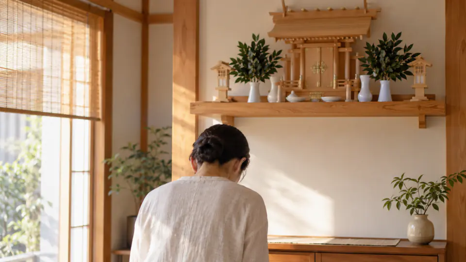

二礼二拍手一礼の意味と作法｜お辞儀の角度、柏手（かしわで）を打つ理由と美しい参拝手順

神社の拝殿の前や、自宅の神棚の前に静かに立つ。背筋を伸ばし、深く二回お辞儀をして、パンパンと二回手を打つ。そして静かに祈りを捧げ、最後にもう一度頭を下げる。
この「二礼二拍手一礼（にれい・にはくしゅ・いちれい）」は、日本の神社参拝や家庭の神棚で最も親しまれている基本の拝礼作法です。
「なぜお辞儀を二回するの？」「なぜ拍手のときに右手を少しずらすの？」といった疑問を持つ方も多いかもしれません。この記事では、身体の所作に込められた敬意と感謝の意味、丁寧なお参りの手順、そして神社ごとの違いやアプリでの心持ちを詳しく解説します。
二礼二拍手一礼（二拝二拍手一拝）とは｜身体の所作で神仏に表す敬意
神社のお参りでは、「二礼二拍手一礼」が基本の作法として広く用いられています。格式ある神事の場などでは「礼」の代わりに「拝」を用いて「二拝二拍手一拝（にはい・にはくしゅ・いっぱい）」とも呼ばれます。
これは、深いお辞儀を二回行い、手を二回打ち鳴らし、祈りを込めたあとに最後にもう一度深いお辞儀を行う一連の流れを指します。
言葉だけで「感謝しています」と伝えるのではなく、姿勢を正し、身体を大きく傾け、澄んだ音を響かせる。身体全体の丁寧な所作を通じて神様への深い敬意を表すことが、この拝礼の本質です。
日常のあわただしい動作から一度離れ、ゆっくりと身体を動かすことで、自然と呼吸が深まり、自分自身の心も穏やかに整っていきます。
正しい拝礼の作法と手順｜お辞儀の深さと柏手（かしわで）のずらし方
神前での基本拝礼は、以下の4つのステップで丁寧に行います。
- 神前で姿勢を整え、二回深くお辞儀をする（二礼／二拝）：
腰を直角（およそ90度）近くまで折り、頭を深く下げます。背筋をすっと伸ばしたまま、ゆっくりと二回繰り返します。 - 両手を合わせ、右手を少しずらして二回拍手する（二拍手）：
胸の高さで両手を合わせます。このとき、右手の指先を左手の第一関節あたりまで少し手前に引いて（下げて）ずらします。肩幅ほどに軽く手を開いて「パン、パン」と澄んだ音を二回響かせます。 - 手をそろえて祈りを伝える：
ずらしていた右手を再び左手とぴったりそろえ、指先を合わせます。この状態で、神様に日頃の感謝やお願いごとを心の中でお伝えします。 - 手を下ろし、最後にもう一度深くお辞儀をする（一礼／一拝）：
祈りを終えたら静かに手を下ろし、最後にもう一度深くお辞儀をしてお参りを締めくくります。
神社祭式にある再拝拍手の作法を基本として、この「二拝二拍手一拝」の参拝方法が広く慣例化しました。一動作ずつ落ち着いて行うことで、慌ただしい日常から離れ、静かな気持ちで神前に向き合うことができます。
なぜ手を打つのか｜拍手（かしわで）の意味と神社による作法の違い
神前で手を打つ所作は「拍手（はくしゅ・かしわで）」と呼ばれ、柏（かしわ）の葉のように両手のひらを打ち合わせることから「柏手を打つ」ともいわれます。神前での拍手は、神様に誠の心を捧げ、日々お陰をいただいていることに心から感謝して打つものです。
なお、礼や拍手の回数はすべての神社で一律というわけではありません。
例えば、島根県の出雲大社では、正式な参拝作法を「二礼四拍手一礼（四回手を打つ）」としています。出雲大社の案内によれば、年に一度の最も大きな祭典である例祭（勅祭）では、古くから無限の数を意味する「８」にちなんで八拍手をもって神様をお讃えし、日常の参拝ではその半分の四拍手で神様をお讃えする作法とされています。
回数の違いはどちらかが間違いというわけではなく、その神社に伝わる由緒や祭祀の歴史によるものです。一般的な参拝では「二礼二拍手一礼」を基本形として心得ておけば安心ですし、独自の作法が案内されている神社ではその案内に従ってお参りするのが自然です。
神棚アプリでお参りする際の心持ち｜静寂の中で感謝と願いを整える
スマートフォンで神棚アプリを開くとき、物理的な神社のように人前で大きくお辞儀をしたり、大きな音で柏手を打ったりすることが難しい環境もあるでしょう。
大切なのは、形式的な動作そのものにとらわれすぎることではなく、「神様への敬意と感謝を持って向き合おう」という心の姿勢です。

アプリでお参りする際にも、次のような小さな意識を取り入れてみてください：
- 画面を開いたら、まず背筋をすっと伸ばして一呼吸置き、姿勢を整える。
- 心の中で「二礼二拍手一礼」のゆったりとしたテンポを思い浮かべながら、気持ちを静める。
- まず今日まで無事に過ごせたことに「ありがとうございます」と感謝を伝え、そのうえで叶えたい願いを具体的に言葉にする。
通勤電車の中やオフィスのデスク、就寝前のベッドの上であっても、姿勢を整えて静かに祈りを捧げるだけで、日々の忙しさから気持ちが切り替わり、穏やかな余白を取り戻すことができます。
姿勢を整え、日常の中に穏やかな祈りの時間を
神社へ足を運べない日でも、神棚アプリがあれば、いつでもどこでも静かに手を合わせることができます。日々の感謝と願いをそっと神前に届け、心穏やかな毎日を重ねてみませんか。
執筆・参照方針
この記事における拝礼作法の基本、拍手の所作、および神社の由緒による作法の違いは、神社本庁、福岡県神社庁、遠江国一宮 小國神社、および出雲大社が公開する公式案内を参照しています。実際の参拝作法は、各神社やご家庭の伝承に合わせて行ってください。